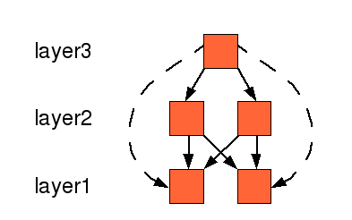

4. Dependency Definition File
Classycle's Dependency Checker uses a dependency definition file (file type .ddf) in order to check unwanted dependencies. Dependency definition files are text files (with a syntax as explained below) which define sets of classes and independency relations between them. These relations are checked and reported if they fail.4.1 Example
The following example file contains all types of commands:
#
# This is an example of a dependency definition file
#
show allResults
{package} = classycle
[util] = ${package}.util.*
[non-util] = ${package}.* excluding [util]
[class-file] = ${package}.classfile.*
check sets [util] [non-util] [class-file]
check [util] independentOf [non-util]
check [class-file] independentOf [util]
check ${package}.ant.* independentOf java.util.* java.awt.* \
javax.swing.*
check absenceOfClassCycles > 1 in [util]
check absenceOfPackageCycles > 1 in ${package}.*
layer basic = [class-file] [util]
layer dependency = ${package}.dependency.*
check layeringOf basic dependency
With the default result renderer the output reads
show onlyShortestPaths allResults
Set [util] has 8 classes.
Set [non-util] has 78 classes.
Set [class-file] has 14 classes.
check [util] independentOf [non-util] OK
check [class-file] independentOf [util] OK
check classycle.ant.* independentOf java.util.*
Dependency found:
classycle.ant.ClassycleTask
-> java.util.LinkedList
-> java.util.ArrayList
-> java.util.Iterator
classycle.ant.ReportTask
-> java.util.HashSet
classycle.ant.DependencyCheckingTask
-> java.util.Map
-> java.util.Hashtable
-> java.util.Properties
check classycle.ant.* independentOf java.awt.* OK
check classycle.ant.* independentOf javax.swing.* OK
check absenceOfClassCycles > 1 in [util] OK
check absenceOfPackageCycles > 1 in classycle.*
classycle.renderer et al. contains 2 packages:
classycle.renderer
classycle
check [class-file] directlyIndependentOf [util] OK
check [util] directlyIndependentOf [class-file] OK
check [class-file] directlyIndependentOf classycle.dependency.* OK
check [util] directlyIndependentOf classycle.dependency.* OK
4.2 Syntax
- Lines starting with '#' and empty lines are ignored.
- A command occupies one line. It can be wrapped on several lines if the previous line ends with '\'.
- There are two types of commands:
Definitions: and Statements: Statements are executed by the DependencyProcessor. They return either ok or they fail.
4.2.1 Definitions
4.2.1.1 Property Definition
- Synopsis:
- Defines a property which can be used in any following line.
- Syntax:
{<property name>} = <any string>where <property name> is the name of the property and <any string> is any string without leading and trailing spaces.Properties are referred by
${<property name>}- Semantic:
- Properties can be used after their definition.
Before a line in the file is parsed possible property references are
resolved. Refering an undefined property leads to an error.
Properties can be redefined.
In a dependency definition file all system properties are available as default properties. Their can be set by the Java VM command line argument
-D<property name>=<any string>
In the case of embedded dependency definition commands in a DependencyCheckingTask the properties defined in the ant script are available as default properties (see Chapter 1.2.2. for an example).
Note: Redefining default properties do not alter the original system properties or ant properties.
4.2.1.2 Set Definition
- Synopsis:
- Defines a set of classes.
- Syntax:
[<set name>] = <term>1..*
or[<set name>] = <term>0..* excluding <term>1..*
where <set name> is the unique name of the set. It should not contain '[', ']', or whitespaces. <term> is either a set denoted by its name and brackets or a wild-card pattern for a fully-qualified class name. Note, that only '*' is allowed as a wild-card character. The subscripts 1..* denotes one-or-many terms.- Semantic:
- Each term defines a set of classes. The sequence of terms means the union set of these terms. The excluding operation means the creation of a difference set. Note, that a set may also include external classes.
4.2.1.3 Layer Definition
- Synopsis:
- Defines a layer as a set of sets of classes.
- Syntax:
layer <layer name> = <term>1..*
where <layer name> is the unique name of the layer. It should not contain whitespaces. <term> is either the name of a set as defined in a set definition or a wild-card pattern.- Semantic:
- Each term defines a set of classes. The layer is a set of such sets.
4.2.2 Statements
All statements yield a result which is either ok or not ok.4.2.2.1 Set Display Preference
- Synopsis:
- Define display preferences.
- Syntax:
show <preference>
where <preference> is a preference recognized by the used ResultRenderer. Currently all ResultRenderers take care of preferenced created by the DefaultPreferenceFactory.- Semantic:
- The display preference controls rendering of the results of all statements following this statement. The result of this statement type is always ok.
4.2.2.2 Check Sets
- Synopsis:
- Checks whether sets of classes are empty or not.
- Syntax:
check sets <set>1..*
where <set> is either the name of a set as defined in a set definition or a wild-card pattern.- Semantic:
- Checks whether the specified sets are empty or not.
The result is ok if each set contains at least one class.
The main purpose of this command is to find out missspelled set definitions.
4.2.2.3 Check Cycles
- Synopsis:
- Checks whether a set of classes has a class/package cycles exceeding a defined size.
- Syntax:
check absenceOfClassCycles > <maximum size> in <set>
orcheck absenceOfPackageCycles > <maximum size> in <set>
where <maximum size> is the maximum number of classes/package a cycle (more precisely: a strong component) is allowed to have. It must be a positive number. <set> is either the name of a set as defined in a set definition or a wild-card pattern.- Semantic:
- If there are no cycles in the specified set exceeding the maximum
size the result is ok.
Note that strong components might not be detected if they are only partially covered by the specified set.
4.2.2.4 Check Classes Dependency
- Synopsis:
- Checks whether sets of classes are dependent/independent from other sets of classes.
- Syntax:
check <set>1..* independentOf <set>1..*
orcheck <set>1..* directlyIndependentOf <set>1..*
orcheck <set>1..* dependentOnlyOn <set>1..*
where <set> is either the name of a set as defined in a set definition or a wild-card pattern.- Semantic:
-
- independentOf/directlyIndependentOf:
It checks whether a path is found from a class in a set
defined by the sets in the left group to a class in a set of the
right group. The result is ok if no path is found. The operation
directlyIndependentOf does a weaker check: It looks only
for direct references from classes in the left sets to classes in the
right sets. If dependencies are found the subgraph will be stored
in the result.
If groups of sets are specified either left or right the statement will be broken down to statements for pairs where one set is from the left group and the other one from the right group. Thus a original statement with n left sets and m right sets turns into n times m statements.
- dependentOnlyOn:
It checks whether each set of the left group depends directly only
on itself or on the union of all sets of the right group. That is,
the check fails if there is a class of one of the sets of the left
group which directly depends on a class which is neither in its
defining set nor in one of the sets of the right group.
If the left group has more than one set the statement will be broken down to n statements, where n is the number of sets in the left group. Each statement checks the dependency of only one set.
- independentOf/directlyIndependentOf:
It checks whether a path is found from a class in a set
defined by the sets in the left group to a class in a set of the
right group. The result is ok if no path is found. The operation
directlyIndependentOf does a weaker check: It looks only
for direct references from classes in the left sets to classes in the
right sets. If dependencies are found the subgraph will be stored
in the result.
4.2.2.5 Check Layering
- Synopsis:
- Checks a layer architecture.
- Syntax:
check layeringOf <layer>1..*
orcheck strictLayeringOf <layer>1..*
where <layer> denotes a name of a layer defined in a layer definition.- Semantic:
- This is a convenient statement for checking whether a stack of layers
build a layered architecture or not.
The left-most (right-most) layer is the bottom (top) layer.
The statement is turned into several statements of the type
checking direct independency
(directlyIndependentOf) for the following
dependencies which are all not allowed:
- Between the sets defining a layer.
- From a lower layer to an upper layer.
- From an upper layer to a layer not directly underneath if strictLayeringOf is used.

(C) 2003-2011 Franz-Josef Elmer. All rights reserved. Last modified: 3/25/2013